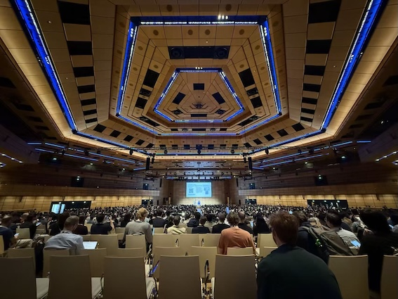
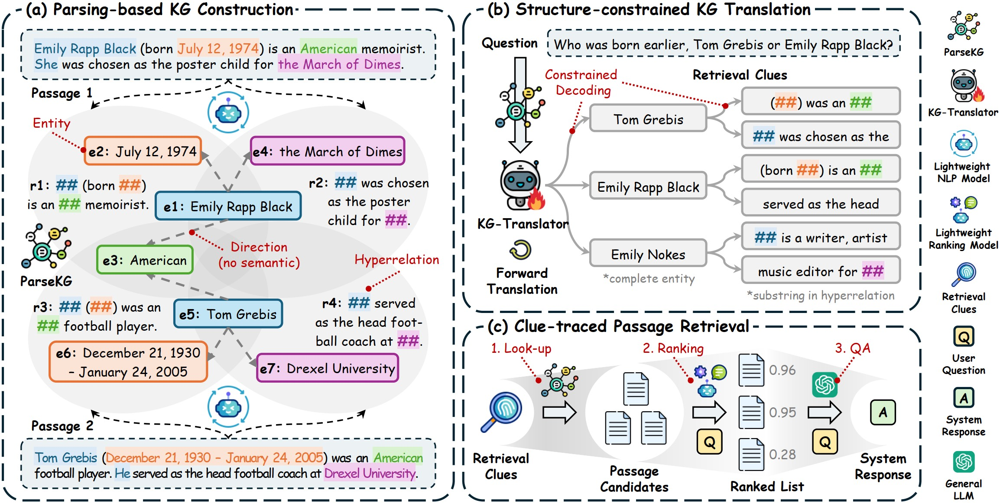
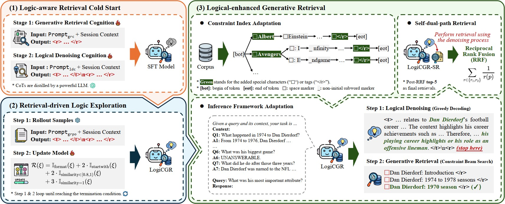
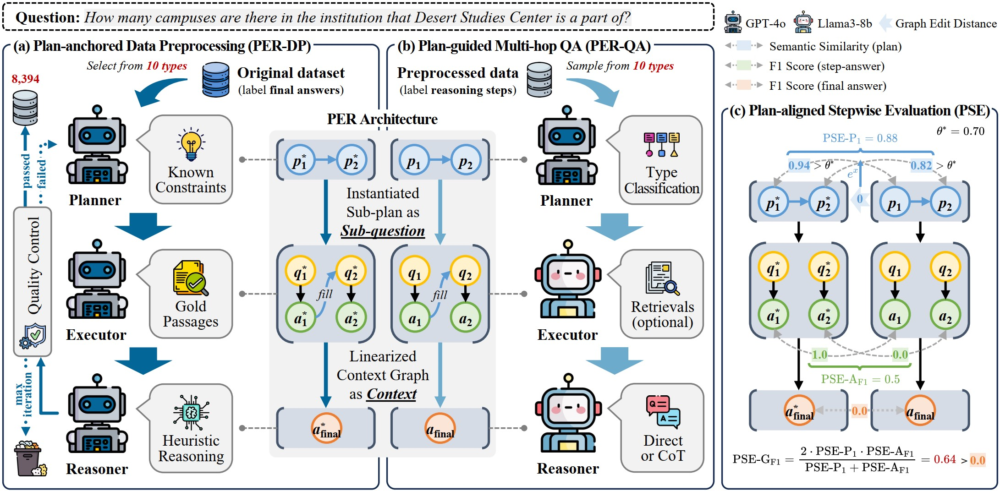

Qichuan LIU
Ph.D. Student @ SI-XMU
News
-
2026.05.01
Our KG-Translator for precise retrieval was accepted by ICML'26!
-
2026.01.14
Our LogiCGR for conversational search was accepted by WWW'26!
-
2025.10.08
🎉 Our GenIRAG Team's First Anniversary! Thank Chentao, Chenfeng, Yuxuan for their generous support over the past year.
-
2025.08.02
I participated in ACL 2025 and gave a poster presentation in Vienna, Austria.
-
2025.05.16
Our PER-PSE for fine-grained multi-hop QA was accepted by ACL'25 (Main)!
-
2024.10.08
🎉 I founded the GenIRAG Team! We are committed to the new generation of retrieval: Trustworthy Retrieval-Augmented AI.
-
2024.05.09
Our two papers TCEKG and SCER for KG-enhanced power systems were accepted as oral presentations at ICIC'24!
Photos




Biography
I am currently a first-year Ph.D. student at the School of Informatics, Xiamen University, fortunate to be co-advised by Prof. Zhihong Zhang and Prof. Qinggang Zhang (Jilin University). In 2023, I received a Bachelor of Management degree from South-Central Minzu University. In Oct. 2024, I founded the GenIRAG Team and have close work with Chentao Zhang, Chenfeng Zheng, Yuxuan Hu, Tianke Xiang, and Zerui Chen.
My research interests include Information Retrieval (IR), Retrieval-Augmented Generation (RAG), Knowledge Graph (KG), and LLM-based Agent. My research topic is Trustworthy Retrieval-Augmented AI and Its Application, with recent work published in top-tier AI conferences including ICML'26, WWW'26, and ACL'25.
Publications(‡ for corresponding author)
ICML'26 From Retrieval to Translation: Translating Query into Graph-level Clues for Retrieval-Augmented Generation

WWW'26 Facilitating Generative Retrieval with Logical Denoising for Interpretable Conversational Search

ACL'25 Beyond the Answer: Advancing Multi-Hop QA with Fine-Grained Graph Reasoning and Evaluation

ICIC'24 TCEKG: A Temporal and Causal Event Knowledge Graph for Power Distribution Network Fault Diagnosis (oral)
ICIC'24 Self-consistency, Extract and Rectify: Knowledge Graph Enhance Large Language Model for Electric Power Question Answering (oral)
Educations
- 2023.09-Now · Ph.D. student (硕博连读) in Computer Science and Technology, Xiamen University, Xiamen, China.
- 2019.09-2023.06 · B.Mgt. in Information Management and Information Systems, Business Big Data Analysis and Application Experimental Class (商务大数据分析与应用实验班), South-Central Minzu University, Wuhan, China.
Experiences
- 2023.03-2023.04 · China Electric Power Research Institute (中国电力科学研究院), State Grid, Beijing, China.
Honors & Awards
- 2023.07 · Official Media Report of South-Central Minzu University (WeChat Official Account)
- 2020-2023 · National scholarship for Undergraduates ~ 3 times
- 2022.07 · National Second Prize 🥈 in the 15th Chinese Collegiate Computing Competition
- 2022.06 · National First Prize 🥇 in the 10th "TipDM Cup (泰迪杯)" Data Mining Challenge
- 2022.03 · National Third Prize 🥉 in the 17th "Challenge Cup (挑战杯)" Competition
Academic Services
- 2024 · Served as an invited reviewer at CIKM'24.
- 2022-2023 · Participated in compiling the monograph Comprehensive Training in Information System Development (信息系统开发综合实训, 清华大学出版社), contributing to full Chapters 6, 11 and part of Chapter 13.